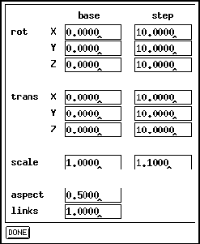

In the model panel the representation of the units is set. With the

button a wire frame model representation is selected. The units then consist only of edges and appear transparent.
The  button creates a solid representation of the net.
Here all hidden lines are eliminated. The units' surfaces are
shaded according to the illumination parameters if no other value
determines the color of the units.
button creates a solid representation of the net.
Here all hidden lines are eliminated. The units' surfaces are
shaded according to the illumination parameters if no other value
determines the color of the units.
When the net is to be changed, the user is advised to use the wire frame model until the desired configuration is reached. This speeds up the display by an order of magnitude.